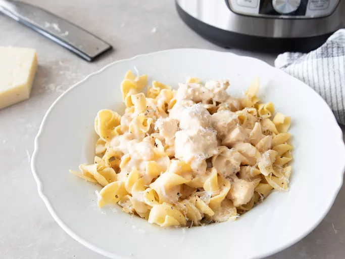

Chicken Alfredo
Back Home

Description
Follow the below steps to make delicious chicken alfredo!
Ingredients
- 4 skinless, boneless chicken breast halves - cubed
- 2 (16 ounce) jars Alfredo pasta sauce
- 4 slices Swiss cheese
- 3 tablespoons grated Parmesan cheese
- 1 teaspoon garlic powder
- salt and pepper to taste
Directions
- Gather all ingredients.
- Stir chicken cubes and Alfredo sauce together in the crock of a slow cooker; cover, and cook on Low for 2 hours.
- Add Parmesan and Swiss cheese; cover and cook for another 30 minutes, or until chicken is cooked through.
- Season with garlic powder, salt, and pepper; stir well before serving.